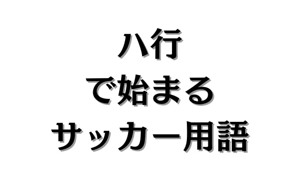
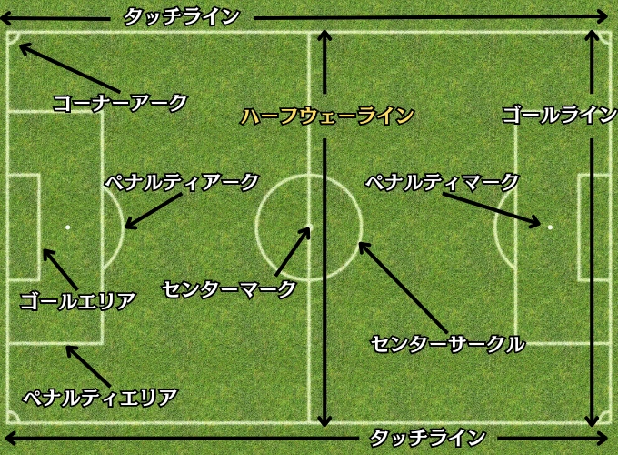
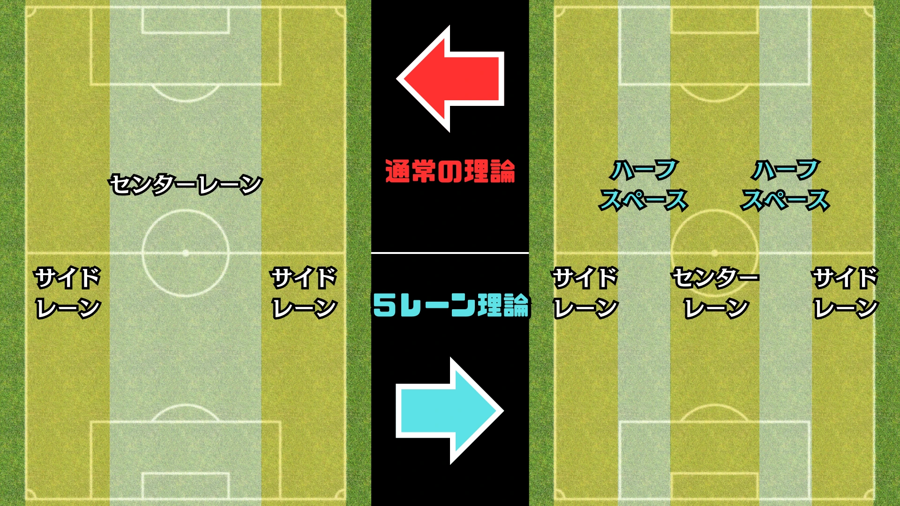
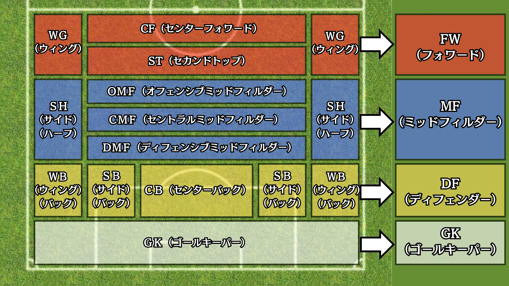

ハ行で始まるサッカー用語


目 次
1. ハで始まるサッカー用語。
ハットトリック【★】
ハットトリックとは、サッカーにおいて一人の選手が1試合の中で3得点を挙げることを指します。
この用語は、クリケットで1つの回の中で3球で3人の打者をアウトにすることで、これを達成したボウラー（投手）に帽子（ハット）が贈られ、その名誉が讃えられたことに由来します。
ハーフウェーライン【★★】

ハーフウェーラインとは、サッカーのピッチを横断する中央のラインを指します。
このラインはフィールドを2つのエリアに分け、攻撃側と守備側を明確に区別する役割を持っています。
ハーフスペース【★★★★】

ハーフスペースとは、サッカーにおけるエリアの一種で、5レーン理論におけるエリアで、センターレーンとサイドレーンの間に位置するスペースです。
通常の理論では、サイドとセンターの2種類だけで考えていたが、4バックが主流となり、CB（センターバック）とSB（サイドバック）の間にできるスペースを有効活用するため、ハーフスペースを考えるようになったと言われています。
2. ヒで始まるサッカー用語。
ピッチ【★】
ピッチとは、サッカーが行われる競技場のフィールド、つまり試合が行われる芝生や土のグラウンドのことを指します。
3. フで始まるサッカー用語。
フィード【★★】
フィードとは、パスの一種で、主にロングフィードという使い方をします。
ロングフィードは、DF（ディフェンダー）やMF（ミッドフィルダー）、GK（ゴールキーパー）から長い距離のパスを出すことを指します。
フリー【★】
フリーとは、選手の状態を表す言葉の一種で、相手からマークを受けていないことを指します。
「フリーでパスを受ける」や「フリーでシュートを打つ」などの使い方をします。
フリーキック【★】
フリーキックとは、セットプレーの一種で、ファールや反則行為を受けた時、プレーを中断し、反則を受けた地点からキックで再開することです。
フリーキックには2種類あり、直接フリーキックと間接フリーキックというものがあります。
直接フリーキック
・直接ゴールを決めることができる。
・主審は、ファウルされたチームの攻める方向に片手を上げ、直接フリーキックを示します。
✕チャージ、飛びかかる、ける、押す、打つ（頭突きを含む）、タックルする、つまずかせるなど身体接触を伴う反則行為に対して与えられます。
✕ハンドや相手選手を押さえる行為、審判員や他の競技者に対する攻撃的な行動、身体的接触によって相手選手の進行を遅らせる行為に対しても与えられます。
間接フリーキック
・味方または相手が一度触れないとゴールにはならない。
・主審は、間接フリーキックであることを示すために片手を上げます。
✕危険なプレー、身体接触を伴わない相手の進行妨害、不適切な言動などで与えられます。
✕ゴールキーパーがボールを手で保持した場合、6秒以内に手から離さないと反則となり、相手チームに間接フリーキックが与えられます。
✕味方からの足を使ったバックパスをゴールキーパーが手で触れると反則となり、相手チームに間接フリーキックが与えられます。
プレス【★】
プレスとは、守備戦術の一種で、ボールを保持している相手に対して圧力をかけ、ボールを奪取しようとすることです。
4. へで始まるサッカー用語。
ヘディング【★】
ヘディングとは、技術の一種で、頭を使ってボールを扱うプレーのことを指します。
5. ホで始まるサッカー用語。
ボックスストライカー【★★★★】
ボックスストライカーとは、FW（フォワード）のプレースタイルの一種で、ペナルティボックス（エリア）内で相手と駆け引きをし、点を取ることを得意とするプレイヤーです。
得点感覚に優れ、ゴール前での動きやポジショニングが特徴的な選手を指します。
ポジション【★】

ポジションとは、選手がどこに配置されるのかを表し、フォーメーションによって役割が変化しますが、大きく分けると4つのポジションがあります。
FW（フォワード）
相手ゴールに近い位置でプレーし、得点を狙ったり、アシストでチャンスを生み出すなど、攻撃の要として活躍します。
MF（ミッドフィルダー）
ピッチの中央付近でプレーし、攻撃と守備の橋渡し役としてチームのバランスを保つ役割を担います。
DF（ディフェンダー）
自陣のゴール付近で構え、相手の攻撃を防ぎチームの守備を支える役割を果たします。
GK（ゴールキーパー）
自陣のゴール前を守るポジションで、相手のシュートを阻止する役割を担います。サッカーにおいて唯一手を使うことが許される特別な存在です。
ポジショニング【★★】
ポジショニングとは、個人戦術の一種で、選手が試合中に効果的な位置を取ることを指します。
ポジショニングは、攻撃時・守備時を問わず必須で、1人の小さなズレがチームとして大きな損害をもたらします。
ポストプレー【★★】
ポストプレーとは、FW（フォワード）のプレーの一種で、背を向けて相手ディフェンダーと対峙しながらボールを受け、攻撃の起点になるプレーを指します。
ポゼッション【★★】
ポゼッションとは、試合中のボール保持のことを指します。
ボール支配率のことをポゼッション率と言ったりもします。